These are instructions to download and configure the Atlantis Client for Mac OSX
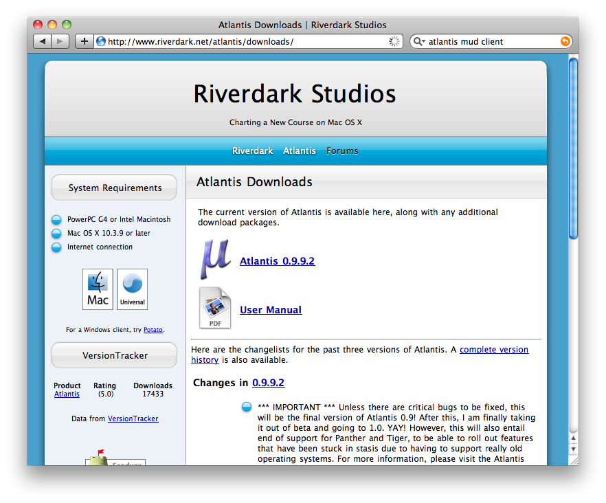
go to http://www.riverdark.net/atlantis/downloads/ and get the current version of Atlantis
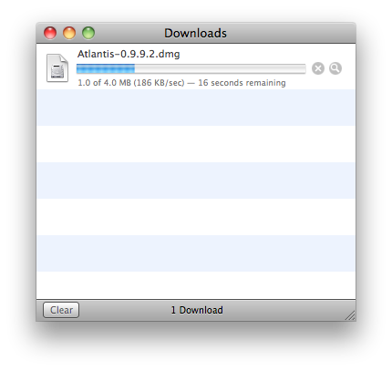
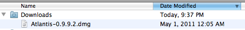
open the .dmg image file
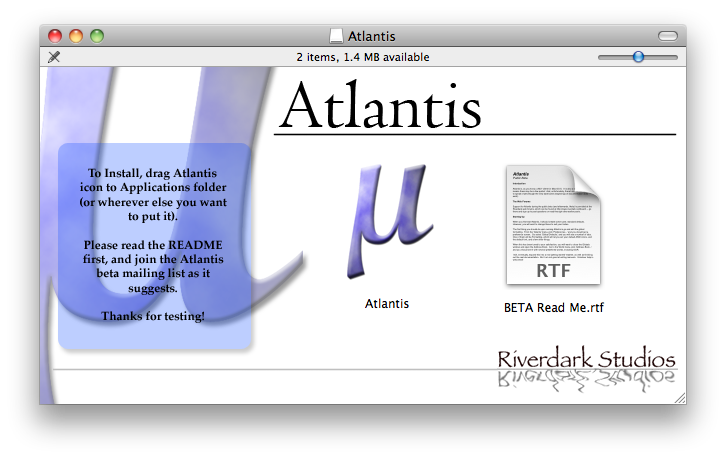
put atlantis in you applications folder or wherever you will be running it from
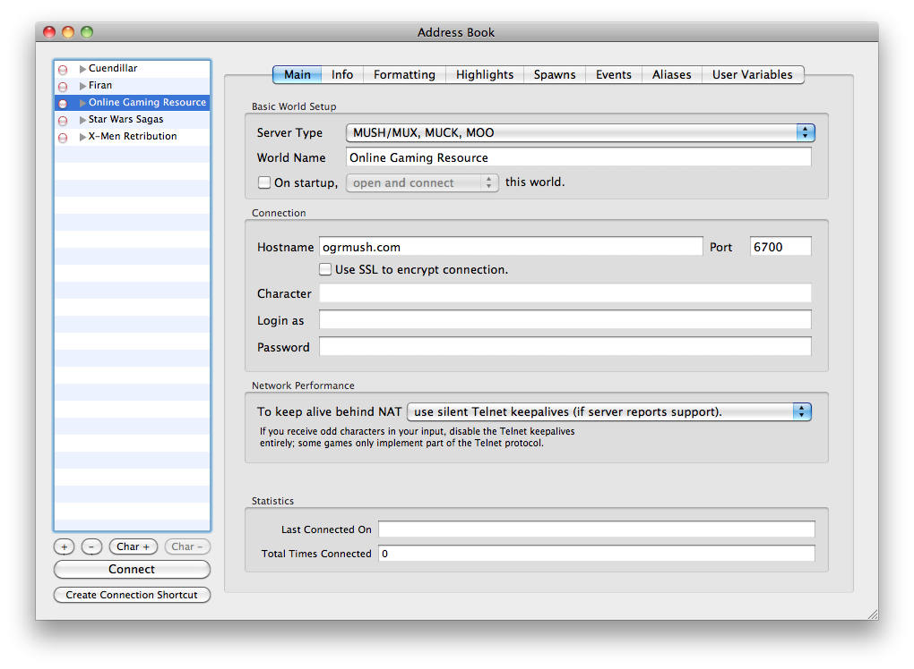
launch atlantis, to connect to look art you will need to create a new login
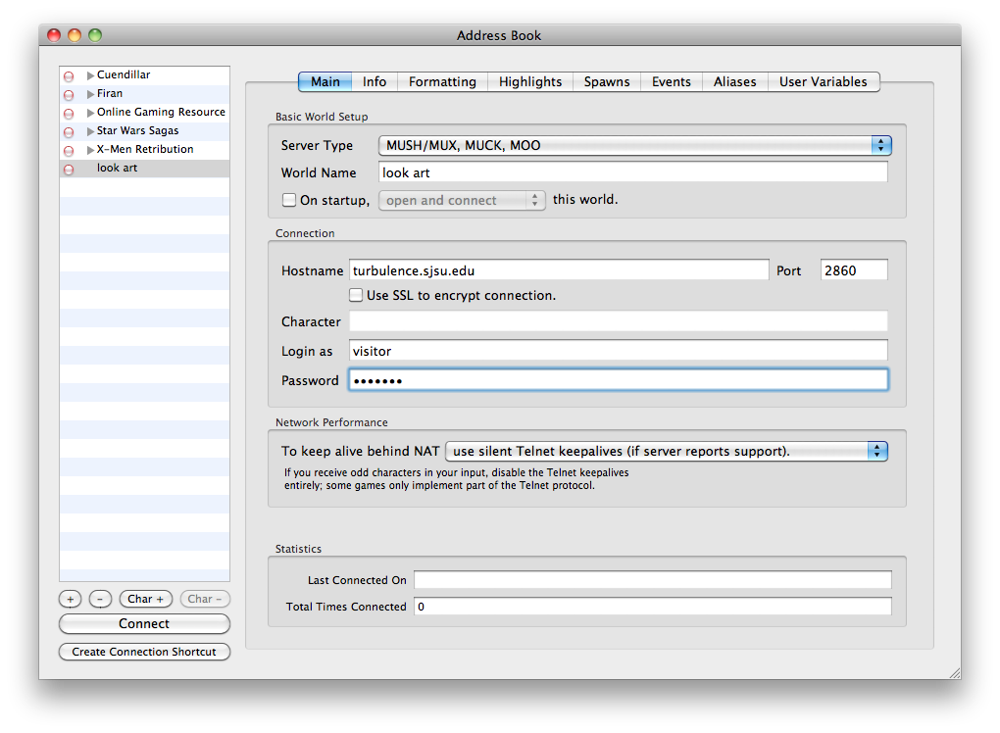
the world name is whatever you want to call it, hostname turbulence.sjsu.edu and port 2860 identify the server, login as visitor, password visitor will put you into a generic visitor account.
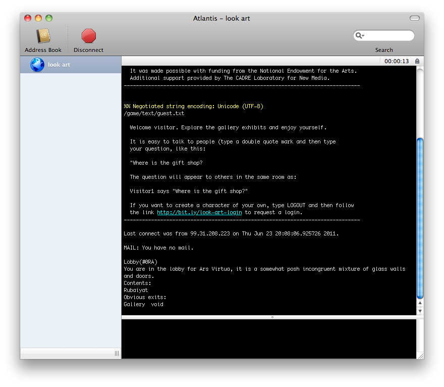
connect and you are in! note that there may be additional limitations on vistitors (number of visitors active etc). if you want to request login of your very own go to http://bit.ly/look-art-login
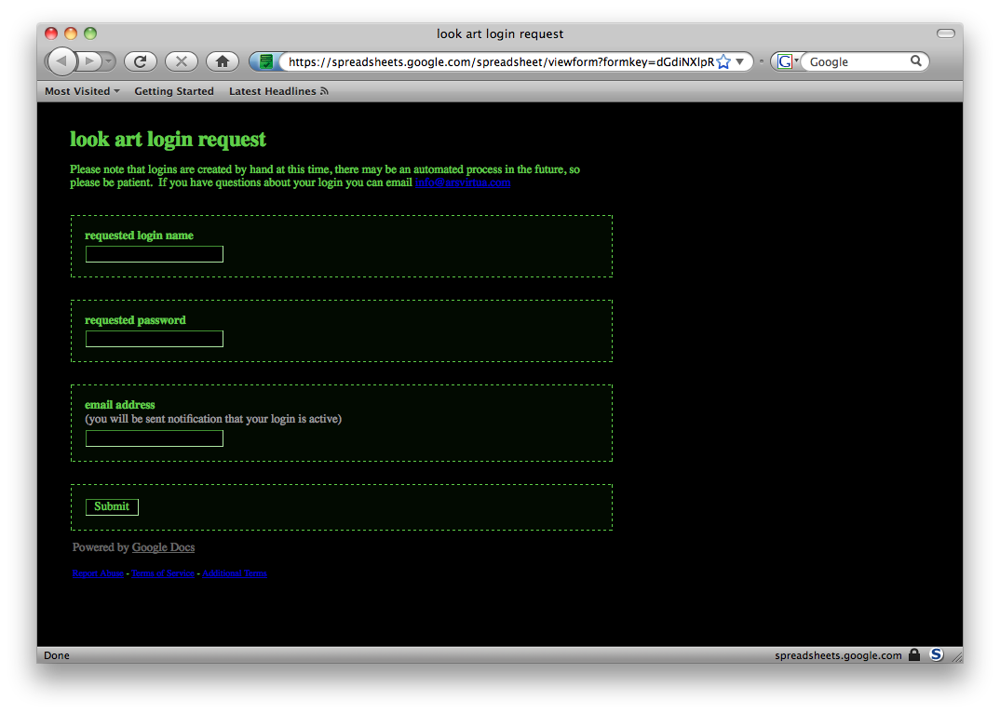
fill out the information, the email is so that you can be notified that your account is active and if there were any changes that needed to be made, for example if the login name was difficult for the MUD.
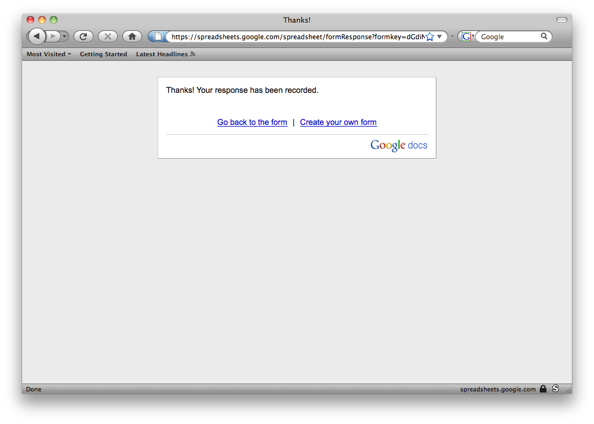
survey complete! wait for an email, the process is currently handled manually. however once your account is created you can use ssl to log in securely.
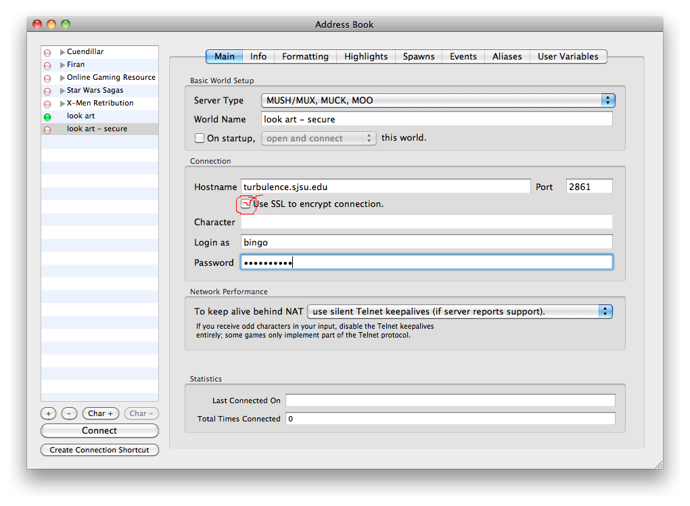
This is done by using port 2861 and checking the "Use SSL to encrypt connection." box
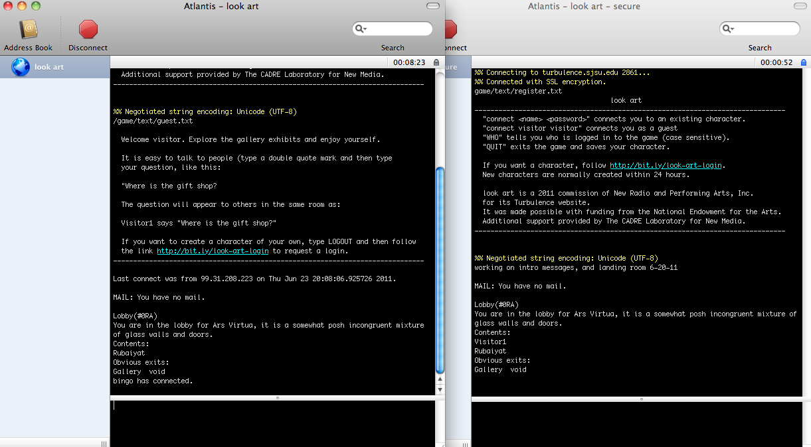
this will permit you to be on more than one MUD.
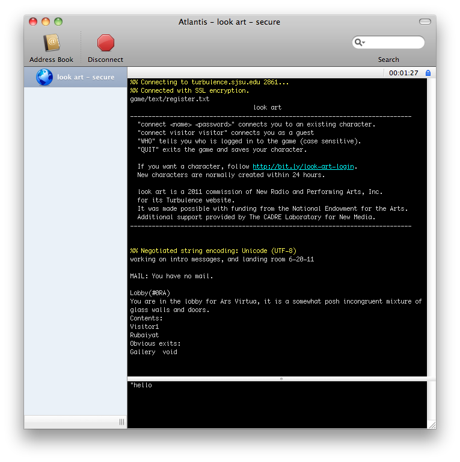
whenever someone enters the room you are in or types something, Atlantis will notify you...
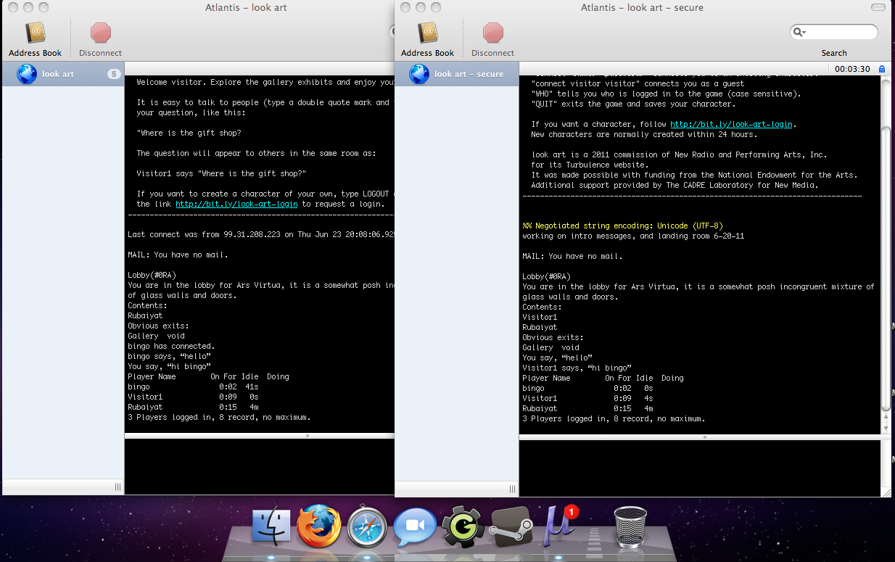
note also the Atlantis doc icon shows the number of events that have occured.